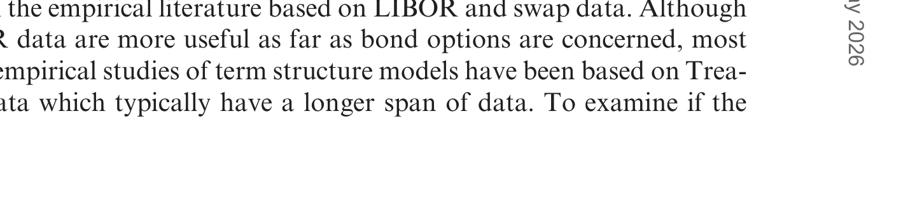
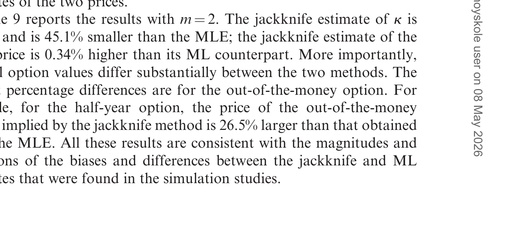
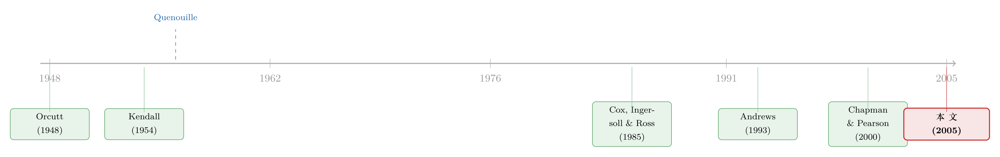

用了十年数据，期权价格还是错了六成——一把 1956 年的老刀，怎样削掉它
本文读的是 Phillips & Yu (2005, Review of Financial Studies)：利率衍生品的价格高度依赖扩散过程的均值回复参数 k，而 k 的最大似然估计在有限样本里有惊人的向上偏差——真值取 0.1、用 600 个周度观测（十年出头的数据）时，k 的偏差高达 391.2%，并由此让一只贴现债券期权的价格被系统性低估 60.6%。更糟的是，这个偏差即使把数据拉到 50 年也不会消失。他们的解法，是一把 1956 年就有的老工具——刀切法 (jackknife)：它不需要写出偏差的解析表达式，甚至可以直接作用在期权价格本身上，而且几乎不增加任何计算成本。
1 一个让人不安的开场
先设想一个让做衍生品的人都很熟悉的场景。
你手里有一只期权——比如一只挂在三年期贴现债券上的一年期欧式看涨期权。它的定价不靠拍脑袋：Cox、Ingersoll 和 Ross (1985)（下称 CIR）早就给出了闭式解，价格是短期利率那条扩散过程参数的明确函数。你也不缺数据，手上摆着十年出头的周度利率序列。你用的更是计量经济学里的「金标准」——最大似然估计 (maximum likelihood estimation, MLE)，渐近性质好得无可挑剔。
万事俱备。可当你把估出来的参数代回 CIR 的期权公式，算出来的价格，比真值低了六成。
这不是危言耸听，而是本文 Table 1 第一行白纸黑字的结果：真实的均值回复速度 k = 0.1，期权真值是 2.392，而 MLE 给出的均值只有 0.9426——偏差 −60.6%。
问题出在哪？不是你的公式错了，不是你的数据脏了，也不是离散化 (discretization) 那点老生常谈的近似误差。真正的元凶，是一个常被一句「渐近无偏」就轻轻放过的东西——有限样本偏差 (finite sample bias)。而本文要讲透的，正是这一件事：在债券期权定价里，估计偏差才是最被低估的敌人，它甚至比设定误差更值得你操心。
2 偏差从哪里来：一个「贴着单位根」的老问题
要理解这六成是怎么来的，得先回到一个比期权古老得多的话题。
首先，在最普通的一阶自回归 (first-order autoregression, AR(1)) 模型里，MLE / 最小二乘对自回归系数 φ 的估计是向下偏的。这件事 Hurvicz (1950)、Orcutt (1948) 早就用解析和蒙特卡洛两种办法证过；Kendall (1954) 还给出了一阶近似下的偏差公式：
$$E(\hat{\phi}) - \phi = -\frac{1+3\phi}{T} + O\!\left(T^{-2}\right)$$
据此一个最自然的纠偏就是把它加回去：
$$\hat{\phi}_K = \hat{\phi} + \frac{1+3\hat{\phi}}{T}$$
关键在那个 1+3φ：φ 越靠近 1，偏差越大。而且 Andrews (1993)、Orcutt & Winokur (1969) 还发现，一旦回归里多塞进截距、时间趋势，偏差会进一步被放大。
接着，一个自然的问题是：连续时间的扩散模型，会不会也染上这个毛病？答案是——会，而且更狠。原因藏在离散化的代数里。一个均值回复型扩散，离散观测下满足的差分方程和 AR(1) 几乎同形，其自回归系数恰好是
$$\phi = \exp(-k\Delta) \approx 1 - k\Delta$$
这里 Δ 是观测间隔（周度 Δ=1/52，月度 Δ=1/12）。在实务里 k 往往非常接近零，于是 φ 就死死贴着 1——一个标准的「近单位根 (near unit root)」情形，正是 AR 偏差最猖獗的地带。
但真正致命的一步在于换算。k 的偏差大致等于 φ 的偏差再乘上 1/Δ。周度数据 1/Δ = 52——φ 那点看起来不起眼的偏差，被放大了五十多倍。这就是为什么 Chapman & Pearson (2000) 哪怕用了 7500 个观测，估出来的 k 仍然显著上偏；Ball & Torous (1996) 也发现 m、σ 都能估得很准，唯独 k 的抽样分布严重上偏。
「换一把尺子，老问题就翻案」是这条利率文献里反复出现的母题。利率漂移项到底是不是非线性的、波动率到底藏在曲线的哪一段，都对估计方法极其敏感（可参见《利率会不会「拐弯」？——一个被换了把尺子量出来的老问题》与《波动率到底藏在哪里？》）。本文要补的，是这条线里被忽略的一块：偏差本身。
3 模型这一节：CIR 里，价格如何「听命于」k
本文的舞台是一族常弹性方差 (constant elasticity of variance, CEV) 模型——也就是 Chan et al. (1992) 用来横向比拼各种短率模型的那个框架：
$$dr(t) = k\big(m - r(t)\big)\,dt + s\,r^{g}(t)\,dB(t)$$
其中 r(t) 是瞬时无风险利率，B(t) 是标准布朗运动，θ = (k, m, g, s)。r(t) 以速度 k 向无条件均值 m 回复，k 就是那个我们反复在说的均值回复参数。
把 g 设为 1/2，就得到本文主战场——CIR 的平方根模型：
$$dr(t) = k\big(m - r(t)\big)\,dt + s\,r^{1/2}(t)\,dB(t)$$
为什么偏偏挑平方根模型来做实验？因为它「干净」：Feller (1951) 与 CIR (1985) 给出了它的转移密度与边际密度的闭式解——
$$p\big(r(t+\Delta)\mid r(t)\big) = c\,e^{-u-v}\left(\frac{v}{u}\right)^{q/2} I_q\!\left(2\sqrt{uv}\right)$$
其中 c = 2k/\big(s^2(1-e^{-k\Delta})\big)、u = c\,r(t)e^{-k\Delta}、v = c\,r(t+\Delta)、q = 2km/s^2 - 1，I_q(\cdot) 是 q 阶第一类修正贝塞尔函数。有了它，作者可以直接从连续时间模型模拟离散观测（绕开模拟误差），也可以精确做 ML 估计（绕开离散化偏差）。再加上债券价格 P(t,s) 与债券期权价格 C(t,τ;s,K) 同样有解析解——这样一来，蒙特卡洛里量出来的任何偏差，就只能归因于估计本身，干净利落。
那么价格究竟怎样「听命于」k？本文的 Figure 2 把它画得很清楚：债券价格与期权价格都是 k 的非线性、单调递减函数。这带来两个要命的后果：
- 第一，
k一上偏，债券价格与期权价格就一起下偏——偏差被原封不动地传递了过去； - 第二，期权价格对
k的敏感度远高于债券价格，而且k越小，敏感度越大。
这正解释了那组对照数字：同样是 k 上偏 391.2%，债券价格只低估了 2.48%，期权价格却低估了 60.6%。债券厚实迟钝，期权薄而敏感——同一阵风，吹弯的是期权。
4 关键的一步：一把不需要知道「偏差长什么样」的刀
到这里，问题已经很清楚：得给 k（以及最终的价格）纠偏。
但传统纠偏法都有软肋。Kendall (1954) 那种靠展开式的办法，需要你先写出偏差的解析表达式——可在 CIR 期权这种层层嵌套贝塞尔函数的复杂结构里，这个展开式根本写不出来。Andrews (1993) 的中位数无偏 (median-unbiased) 估计依赖精确的中位数函数，而且只能用在参数上，对期权价格这种依赖整个分布细节的复杂量无能为力。MacKinnon & Smith (1998) 的偏差函数逼近、自助法 (bootstrap) 又都贵。
于是反转出现了：作者搬出了一件 Quenouille (1956) 就发明、却从没人用在连续时间模型上的老工具——刀切法 (jackknife)。它的精妙之处恰恰在于「不需要知道偏差长什么样」。
做法朴素到近乎粗暴。把长度为 T 的样本切成 m 段互不重叠、各自等长（ℓ = T/m）的子样本；记全样本估计为 \hat{\theta}_T，第 i 段子样本的估计为 \hat{\theta}_{\ell,i}。然后做一个加权组合。
为什么这能消偏？一步步看。假设偏差有如下展开：
$$E(\hat{\theta}_T) = \theta + \frac{a_1}{T} + \frac{a_2}{T^2} + \cdots$$
那么长度只有 ℓ = T/m 的子样本，其领头偏差就被放大了 m 倍：
$$E(\hat{\theta}_{\ell,i}) = \theta + \frac{a_1}{\ell} + O\!\left(\ell^{-2}\right) = \theta + \frac{m\,a_1}{T} + O\!\left(T^{-2}\right)$$
只要把全样本「放大一点」、再减去子样本均值的某个倍数，那个讨厌的 a_1/T 就能精确对消：
$$E(\hat{\theta}_{\text{jack}}) = \frac{m}{m-1}\left(\theta + \frac{a_1}{T}\right) - \frac{1}{m-1}\left(\theta + \frac{m\,a_1}{T}\right) + O\!\left(T^{-2}\right) = \theta + O\!\left(T^{-2}\right)$$
把这一步翻译成估计量，就是本文的核心方程：
注意这里没有出现 a_1、a_2 的任何具体形式——这正是刀切法的全部魅力。你不必知道偏差是 1+3φ 还是别的什么牛鬼蛇神，只要它能展开成 1/T 的幂级数，这把刀就削得动。
更进一步，也是本文最实用的一招：既然刀切法对「量」没有任何形式上的要求，那就干脆不要纠 k，直接纠期权价格 P 本身。把上式里的 \hat{\theta} 换成期权价格的估计，立刻就把「估计误差 + 非线性」一并带来的偏差也一起削掉了——这是只纠参数的中位数无偏法做不到的。Lo (2003) 曾把刀切法用在 Black–Scholes 上，但用在利率衍生品和均值回复参数上，本文是头一回。
5 它到底有多管用
光有道理还不够，得看蒙特卡洛。
本文固定 m = 0.08（无条件均值 8%），让 k 取 0.1, 0.2, …, 0.6，对应的周度自回归系数落在 0.9981 到 0.9885——全在近单位根区。Table 1 给的是周度、样本量 600（十年出头，正是 LIBOR / 互换数据的典型跨度）下的结果。

Table 1: gives the weekly frequency results with sample size 600. This
读第一行就够震撼了。真值 k = 0.1：MLE 的均值是 0.4912（上偏 391.2%），而刀切估计把它拉回到 0.0765，几乎贴着真值。期权那一栏，真值 2.392，MLE 只有 0.9426，刀切估计是 1.2989——离真值还有距离，但已经把六成的偏差砍掉了一大块。把数据换成月度、拉到 50 年（600 个月度观测），MLE 对 k 的偏差仍有 84.5%，期权仍低估 24.4%——长样本根本救不了你。这一点和长期限预测回归里「样本越长、偏差反而越顽固」的近单位根困境如出一辙（可参见《用更多的数据，买来更大的偏差》）。
但天下没有免费的午餐：纠偏往往要拿方差去换。Table 1 里刀切估计的标准差确实更大，于是在周度、k=0.1 这一格，期权的均方根误差 (root mean squared error, RMSE) 刀切（1.7423）反而略高于 MLE（1.7148）。作者对此很坦诚，并专门设计了一个降方差版本的刀切，使得偏差校正不至于被暴涨的方差吃掉。在直接对期权价格做刀切的月度 CIR 实验里（本文 Figure 1），刀切估计的 RMSE 比 MLE 小 12.1%，同时还带来 11.5% 的偏差缩减——鱼与熊掌可以兼得。
子样本个数 m 怎么选，是另一处需要权衡的旋钮：m 越大，偏差削得越狠，但每段子样本越短、方差代价越高。本文专门考察了 m=2 等小值的表现。

Table 9: reports the results with m¼2. The jackknife estimate of k is
最后一个、也是我个人觉得最有意思的结论：作者把模型故意设定错（用错误的扩散项），刀切法依然能在 k 的估计和期权定价两头同时减小偏差。换句话说——在债券期权定价里，纠偏可能比把扩散项设定对，还要来得重要。这句话颇有点反直觉的分量。本文还把整套办法搬到了双因子仿射 (two-factor affine) 模型，并用美元互换与 LIBOR 数据做了实证，发现刀切与标准法给出的债券、期权价格差异「很大」，足以影响实务决策。
6 文献脉络
把这条线捋一捋，会发现本文站在两股水流的交汇处。
一股来自离散时间的偏差研究：Orcutt (1948)、Hurvicz (1950) 最早把 AR 估计的向下偏差摆上台面，Kendall (1954) 给出了一阶偏差公式，Andrews (1993) 则把它推进到精确中位数无偏估计——这是「人们如何纠 AR 偏差」的主干。
另一股来自连续时间模型的估计：CIR (1985) 与 Feller (1951) 奠定了平方根模型的解析基础，此后 Chan et al. (1992) 做了短率模型的横向大比拼；而 Ball & Torous (1996)、Chapman & Pearson (2000) 等人则相继发现，正是那个均值回复参数 k，在各种方法下都被系统性地上偏。

本文的位置，就在两股水流的合处：它第一次把 Quenouille (1956) 的刀切法引进连续时间模型，既治了 k 的偏差，又顺手把这个偏差对衍生品价格的非线性传导一并解决了。它要回答的问题不再是「k 估偏了没有」（那已是共识），而是「这点偏差到底让你的期权价格错了多少，又能不能用一把便宜的老刀削掉」。
7 评论与延伸（Q&A + 研究方向）
(a) 几个可能的疑问
Q：这里说的「偏差」，和老生常谈的「离散化偏差」是一回事吗？
不是，而且本文反复强调这正是它的要点。离散化偏差来自「用差分方程近似连续过程」；本文里因为平方根模型有闭式转移密度，作者直接对连续模型做精确 ML，离散化偏差被彻底绕开了。剩下的、也是真正大头的，是有限样本估计偏差——它源于近单位根下的统计性质，与离散化无关，量级却大得多。
Q：既然渐近无偏，为什么不直接多取点数据？
因为这里的偏差对样本量「免疫」得出奇。
k接近零意味着φ = exp(-kΔ)贴着单位根，而近单位根情形下偏差消退极慢。本文用 50 年月度数据，k仍上偏 84.5%、期权仍低估 24.4%。在金融实务可得的任何样本里，「等数据攒够」都不是出路。
Q：刀切法和自助法 (bootstrap)、中位数无偏估计比，凭什么胜出？
三个字：又通用又便宜。它不需要偏差的解析展开（Kendall 式办法要），不限于参数、能直接作用在期权价格这种复杂量上（中位数无偏做不到），计算成本也只与初始估计同量级，远低于自助法。代价是可能抬高方差，但作者给出了降方差的改良版。
Q：直接对期权价格做刀切，和先纠 k 再代公式，哪个好？
本文的发现是前者更优。先纠
k只处理了参数偏差，而期权价格里还有「估计误差 + 非线性」共同制造的额外偏差；直接对价格动刀，把这两块一并削掉。Figure 1 显示直接法的 RMSE 比 MLE 小 12.1%。
Q：模型设定错了，纠偏还有意义吗？
有，而且本文给出一个略带挑衅的结论：在错误设定扩散项的情况下，刀切法仍能同时减小
k与期权价格的偏差，其重要性甚至可能超过「把扩散项设定对」。这提醒做衍生品的人，别只盯着模型形式，先把偏差这件事处理好。
Q：这套办法只能用在利率衍生品上吗？
不。作者明确指出，任何「定价量依赖于连续时间系统估计、且存在有限样本偏差」的场合都适用——含随机利率的股票期权、货币期权、各类利率衍生品都在射程之内。它对估计方法也不挑食，MLE、GMM 之类都能套。
(b) 几个可能的研究问题与提案
1. 把刀切法搬到公司债的信用利差期限结构上。 【经济故事】信用风险的结构模型（如带均值回复的违约强度过程）同样依赖一个回复速度参数，而公司债数据比国债更短、更脏，近单位根偏差只会更严重——它会系统性地扭曲 CDS 与信用期权的定价。 【可行性】中。结构上与本文几乎平行，刀切法可直接移植；难点在于信用强度过程往往没有闭式解，需要数值定价，且要把流动性噪声从价格里剥离。数据可用 TRACE 与 Markit CDS。
2. 外资持有比例高的新兴市场国债，偏差是否更毒？
【经济故事】新兴市场利率序列短、且常因资本流动呈现更强的持续性（φ 更贴近 1），按本文的逻辑，k 的上偏会更夸张，从而让当地利率衍生品定价更不可靠——这对依赖这些价格做风险管理的外资是实打实的成本。
【可行性】中。识别清晰（横截面比较「序列持续性 × 偏差量级」），但优质的新兴市场利率衍生品价格数据稀缺，可能要退而求其次用模型隐含价格做蒙特卡洛论证。
3. 在流动性危机里，估计偏差与流动性折价谁更主导债券定价误差？ 【经济故事】危机期间利率序列更持续、样本窗口被迫缩短，估计偏差与流动性折价同时发作。把两者拆开、各自归因，能告诉风险管理者「危机里你算错的价，有几分是统计假象、几分是真实的流动性溢价」。 【可行性】中偏低。需要把本文的偏差量化与一套干净的流动性度量结合，识别两条渠道存在共线性风险，但思路本身很有现实意义。
4. 机器学习定价器会不会「学进」这个偏差？ 【经济故事】如今越来越多人用神经网络做衍生品定价的代理器（可参见《把结构模型「蒸馏」成一张查找表》）。若训练标签本身来自有偏的 ML 参数估计，偏差会被原样「蒸馏」进网络——刀切式的样本切分能否作为一种廉价的纠偏正则？ 【可行性】高。纯模拟即可验证，数据完全自造，与本文的蒙特卡洛框架天然衔接。
8 我的判断
本文的贡献在于把一个被「渐近无偏」掩盖了几十年的实务隐患，量化得无可辩驳：391.2% 的参数偏差、60.6% 的期权定价偏差、以及「50 年数据也救不回来」这三组数字，单独拎出任何一组都足够让做衍生品的人坐直身子。而它给的解药——刀切法——朴素、通用、便宜，还能直接作用在价格本身上，几乎是「拿来即用」。这种「问题量级 + 廉价解法」的组合，是篇好的方法论文该有的样子。
要说对识别的担忧，我有两点。其一，全部偏差量级都建立在平方根模型设定正确的蒙特卡洛之上；尽管作者用错误设定做了稳健性检验并声称结论不变，但现实里扩散项的形式可能错得更离谱，那时「纠偏比设定更重要」这句话还成不成立，证据其实有限。其二，刀切法靠的是「子样本偏差是全样本 m 倍」这个展开式假设，可在极端近单位根（k 真的逼近 0）时，偏差的 1/T 展开本身是否还可靠，是个理论上没完全压实的角落——而那恰恰是利率数据最常落脚的地方。
后续我最想看到的，是把这套办法接到真实的、带流动性摩擦的市场价格上，而不止于模拟与互换利率：当价格里同时混着估计偏差、流动性折价和设定误差时，刀切法削掉的究竟是哪一块、削得干不干净。这一步迈过去，它才算从一个漂亮的统计修正，变成交易台上真正敢用的工具。
参考文献
Andrews, D. W. K. (1993). Exactly Median-unbiased Estimation of First Order Autoregressive/Unit Root Models. Econometrica 61(1), 139–166.
Ball, C. A., & Torous, W. N. (1996). Unit Roots and the Estimation of Interest Rate Dynamics. Journal of Empirical Finance 3(2), 215–238.
Chan, K. C., Karolyi, G. A., Longstaff, F. A., & Sanders, A. B. (1992). An Empirical Comparison of Alternative Models of Short Term Interest Rates. Journal of Finance 47(3), 1209–1227.
Chapman, D. A., & Pearson, N. (2000). Is the Short Rate Drift Actually Nonlinear? Journal of Finance 55(1), 355–388.
Cox, J. C., Ingersoll, J. E., & Ross, S. A. (1985). A Theory of the Term Structure of Interest Rates. Econometrica 53(2), 385–407.
Feller, W. (1951). Two Singular Diffusion Problems. Annals of Mathematics 54(1), 173–182.
Hurvicz, L. (1950). Least Square Bias in Time Series. In T. Koopmans (ed.), Statistical Inference in Dynamic Economic Models. Wiley, New York, 365–383.
Kendall, M. G. (1954). Notes on Bias in the Estimation of Autocorrelation. Biometrika 41(3/4), 403–404.
Knight, J. L., & Satchell, S. E. (1997). Existence of Unbiased Estimators of the Black/Scholes Option Price, Other Derivatives, and Hedge Ratios. Econometric Theory 13(6), 791–807.
Orcutt, G. H. (1948). A Study of the Autoregressive Nature of the Time Series Used for Tinbergen's Model of the Economic System of the United States. Journal of the Royal Statistical Society, Series B 10(1), 1–45.
Phillips, P. C. B., & Yu, J. (2005). Jackknifing Bond Option Prices. Review of Financial Studies 18(2), 707–742.
Quenouille, M. H. (1956). Notes on Bias in Estimation. Biometrika 43(3/4), 353–360.